五子棋技巧闲言→★飞跃性的佈子构想★
#1 五子棋技巧闲言→★飞跃性的佈子构想★ 作者：有志青年 发表时间：2007-5-22 14:03:22
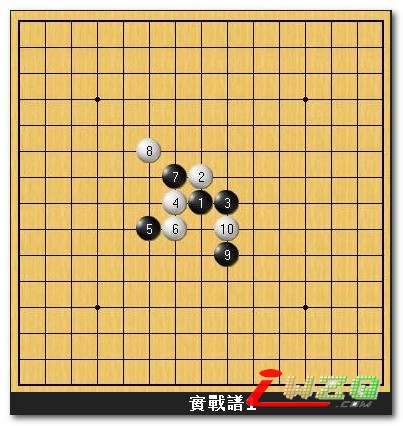
实战谱1︰请看上图，进行到白10止的局面。如果是你的话会如何走？
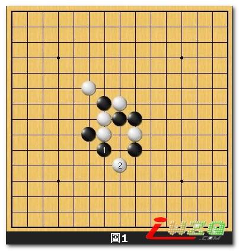
图1︰我想，不少人会採取本图的黑1，一子连通三条活二这样的下法吧！问题是当白2下在防守急所的时候，各位有把握继续掌握先手优势吗？我们不妨再往下看看。
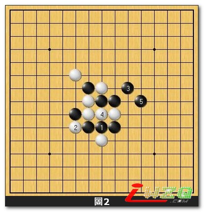
图2︰接续图1的变化。黑1活三重要﹙此点被白方给佔到可不得了！﹚，白2防守必然。接著黑3跳三之后於5位整备。乍看之下黑方这种短兵急攻的下法颇為有效，但．．
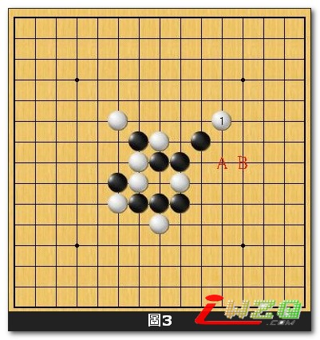
图3︰图2中的白4有本图白1上防的变化。如此一来，黑方必然要投入相当多的时间来思考下一步该怎麼走，如果在右边这一局部杀不下来的话，黑不但序盘优势没了，而且在剩餘时间上也必定大大落后於白方﹙接下来黑若A则白B黑难胜﹚。
换言之，图1至图3以下这般直接短兵急攻的下法可能并不是那麼的妥切。黑方如果在实战谱1后想採取直接猛攻的方法也应该如下图︰
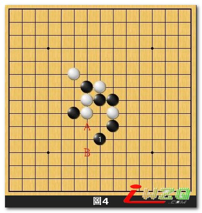
图4︰此黑1為不给白棋任何防守机会的狠招！接下来白A则黑B；白B则黑A。白棋以呈败势。
那麼，我们来看一下实战黑採取什麼样的下法。
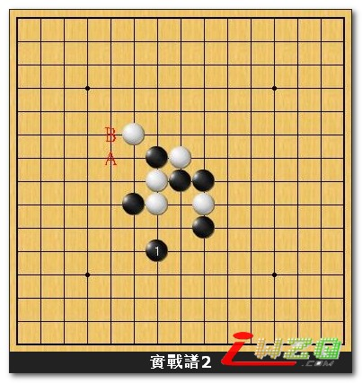
实战谱2︰实战下出黑1！！？看上去相当怪异的一步棋。此黑1不但连一个活二都没有製造出来，而且似乎反而留给了白方A、B等反攻的机会。
黑1真的是一步一无是处的弱招吗？以下就让我们一起来探讨看看。
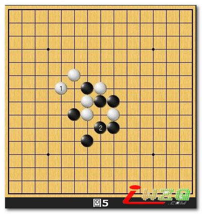
图5︰接下来白若1﹙也就是实战谱2的白A点﹚，被黑2一来后。很明显的，白不只在上方毫无攻势，下方的黑型也强了起来。
此白1明显不成立，那麼，
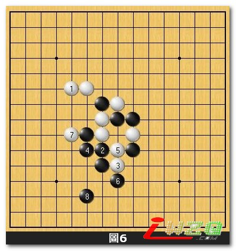
图6︰接下来白若1﹙也就是实战谱2的白B点﹚，黑2一子连通三条活二相当强硬！白3為绝对不能被黑下到的要点。但黑4以下的攻势猛烈白情况不妙。
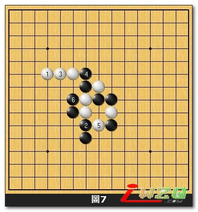
图7︰这个白1应该是此际最好的一手。但正常情况下依旧是黑棋优势的局面。
透过图5到图7的探讨后，我们不难发现白无法对实战谱2的黑1做出立即有效的反击，所以，
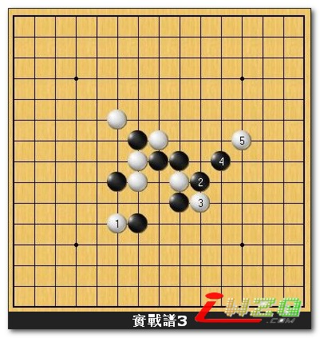
实战谱3︰实战白方并没有选择图7的最佳下法而是在下方去做防守。黑2以下準备开始对白展开攻势。进行到白5后，接下来黑方如何佈子将变得十分关键。
换作是读者来下的话，接下来会如何选择著点呢？
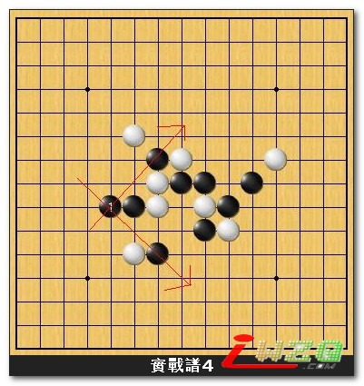
实战谱4︰实战的黑1是相当有意思的一手。除了一子连通两个跳活二以外，对於黑上下两方的攻势都略有助益。
接下来白子若防於上方的话黑便於下方继续佈子，反之亦然。以下我们就继续看下去实战是怎麼走的。
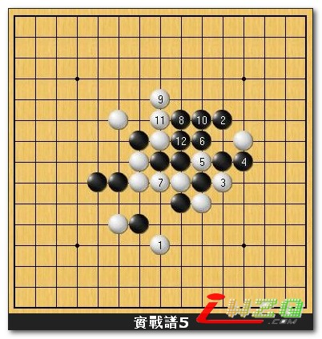
实战谱5︰由於白1防守在下方的缘故，黑2於上方佈子是当然的方向。白3跳活三是本局棋的败招，黑4反跳四以下的攻击是必胜的！
黑12以下的手数就此省略﹙毕竟这边跟本文章要提的运子概念比较没有直接的关连。重点是．．其实我自己也忘了！ ﹚。
最后附上实战总谱和结语︰
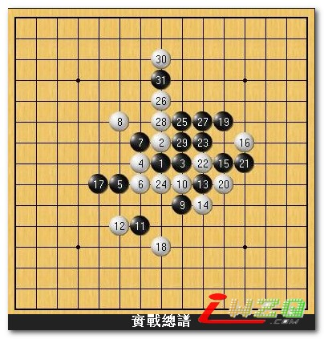
结语︰本局棋為2005年，国内二段棋手卢煒元与我在新浪游戏王的一盘棋局﹙我执白﹚。本文的重点在於实战总谱的黑11和黑17的观念解说。以下，我将重点整理成以下几个要项好方便大家阅读。
一﹒从图1的黑1和图4的黑1两相比较看看。图1的黑1一手棋同时连通了三个活二；而图4的黑1只连通了两个活二。可是图4黑1的攻击威力却比图1的黑1明显大上不小！从这裡我们可以了解，点的选择很难有公式可循，连通较多条攻击线的著点未必就一定是最佳点。
二﹒实战总谱的黑11看上去并没有任何作用，但白棋却没有办法做出任何立即有效的抵抗来加以制衡。而且因為黑11后下方黑势并没有一个很明确的棋型跑出来的缘故，反而会让白方在下方防守点的选择变得更加困难。
三﹒实战总谱的黑17运用了问应手的进攻观念，试探对手如何应对才来决定接下来的下法。白18防在上边的话黑接著便往下方佈子；白18防在下边的话黑接著便往上方佈子。
黑17下在19的位置虽然也充分成立但感觉进攻得太过直接，笔者还
#2 Re:五子棋技巧闲言→★飞跃性的佈子构想★ 作者：fengle 发表时间：2007-7-16 19:43:36
有点明白#3 Re:五子棋技巧闲言→★飞跃性的佈子构想★ 作者：黄药师 发表时间：2007-7-16 21:29:12
静态的东西难以明白～～
#4 Re:五子棋技巧闲言→★飞跃性的佈子构想★ 作者：注册初学者 发表时间：2009-6-24 13:10:45
新手看不太明白 慢慢消化
慢慢消化
#5 Re:五子棋技巧闲言→★飞跃性的佈子构想★ 作者：故事的结尾 发表时间：2009-6-25 12:09:24
不明白慢慢理解吧新手啦
#6 Re:五子棋技巧闲言→★飞跃性的佈子构想★ 作者：五星若连珠 发表时间：2009-8-2 22:02:19
看不太懂，但有点儿启发。。。。。
#7 Re:五子棋技巧闲言→★飞跃性的佈子构想★ 作者：nara 发表时间：2009-8-4 13:02:38
其实这样的文章还是不错的！希望多发点好文！谢谢
#8 Re:五子棋技巧闲言→★飞跃性的佈子构想★ 作者：木其山人 发表时间：2010-6-8 10:29:32
现在三手2的老师讲的都是很基础的东西 都是定势啊 什么的 应该讲点高级的 比如135讲基础 246讲高级 这样才好么［ 掌棋宣传员 于 2010-8-4 15:12:20 时花20金币送鲜花一朵］
#9 Re:五子棋技巧闲言→★飞跃性的佈子构想★ 作者：霸王龙 发表时间：2010-8-4 8:31:54
眼都看花了。。。。。。［ 掌棋宣传员 于 2010-8-4 16:45:50 时花20金币送鲜花一朵］
#10 Re:Re:五子棋技巧闲言→★飞跃性的佈子构想★ 作者：小帮帮 发表时间：2010-8-5 0:33:12
建议非常好啊